Midland State Bank Color System Overhaul
Overview
In this case study, I share my experience as part of a larger design system team working to refine the design system for Midland State Bank. My main focus within the team was enhancing the color system.
The goal was to create a color system that supported theming, including a high-contrast theme for accessibility, and established a clear and consistent color approach that unified the bank’s products and marketing materials.
Once I finalized the new system, I updated the documentation and developed a semantic color palette—a systematic approach that defines the constraints for color generation rather than relying on static swatches.
The process concluded with implementing color updates in Midland State Bank’s design and engineering resources and documentation.
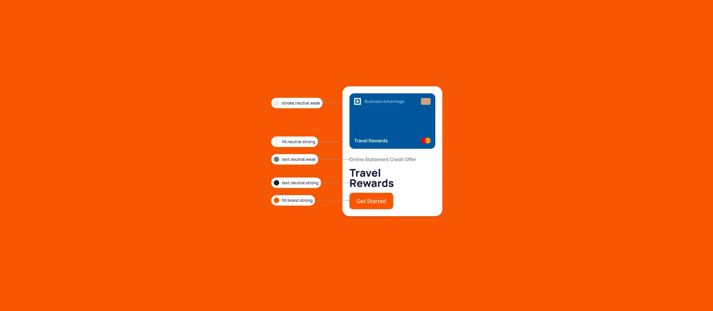
Background
Midland States Bank is a community-focused financial institution offering a range of services, including personal and business banking, loans, and wealth management.
They have many tools and software, including web applications, mobile apps for consumers and businesses, and internal tools.
Over time, different design and engineering teams worked on these products without a clear and consistent design system. This led to a lot of inconsistencies and messy code. To fix this, Midland State Bank decided to improve their products by creating a design system.
I was part of the team working on this project, focusing specifically on improving the color system.
Brand colors
It’s worth noting that I didn’t start from scratch. Midland State Bank already had a brand guideline mainly for marketing purposes, and I was given a set of colors from the marketing department.
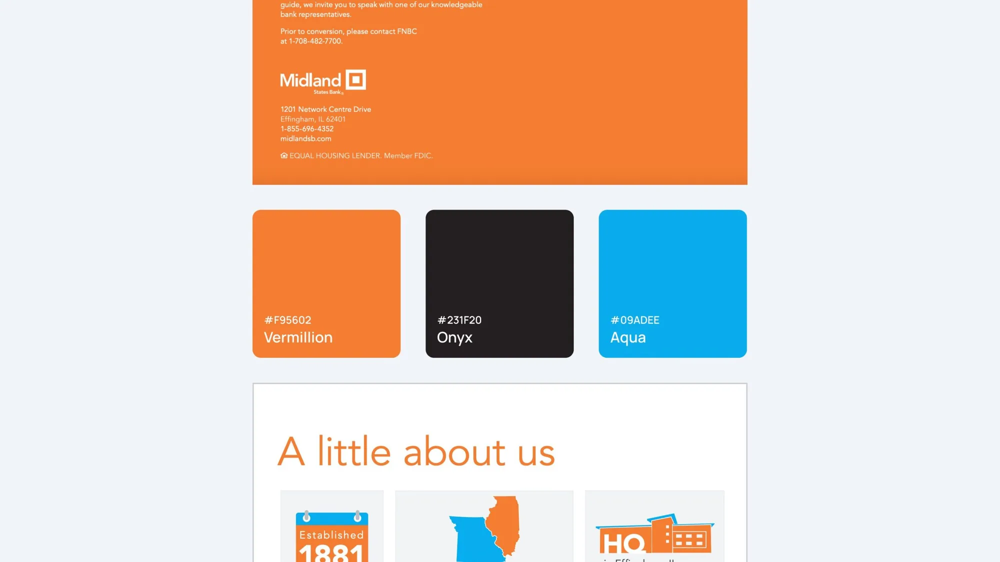
Problem01
Chaos in color structure and naming convention
First, I wanted to understand what they already had in place. So, I asked my engineers to look into the code and give me a clear answer: is there an existing system or even part of a system that I can rely on or use as a starting point?
When they examined the codebase, they found an unstructured and chaotic approach to color usage. Over time, engineers had added numerous colors without consistent logic or structure.
Some colors were named by their usage for example “Modal Overlay”, or “border”, some of them were more abstract: examples are “Primary” or Warning and ultimately, some colors were named just randomly: for example “Neutral 1”, “Neutrlal 2”, “ADA”, or “Inverse darkest”.
This made it challenging to understand the logic behind these colors and how to apply them effectively to the UI.
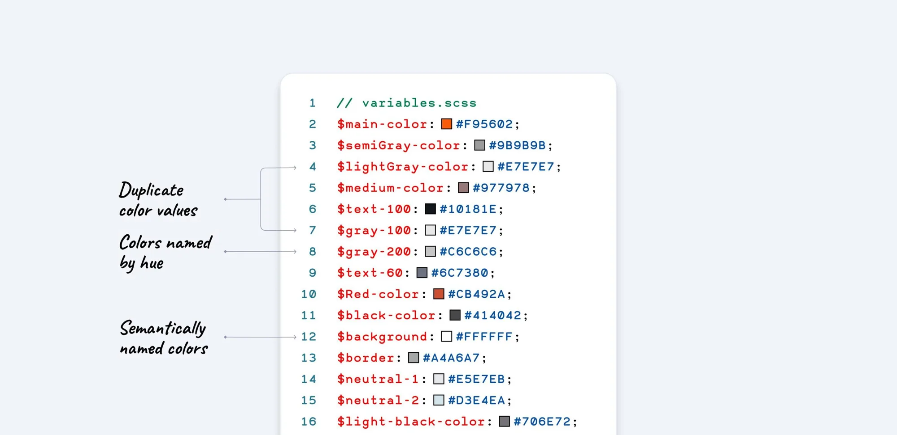
Poor dark mode support
Another significant issue I identified was the poor support for dark mode. The existing implementation was a simple color inversion, which often led to unintended and visually unappealing results.
This approach disregarded the nuances of proper dark mode design, where colors need to be carefully adjusted to maintain readability, contrast, and visual hierarchy.
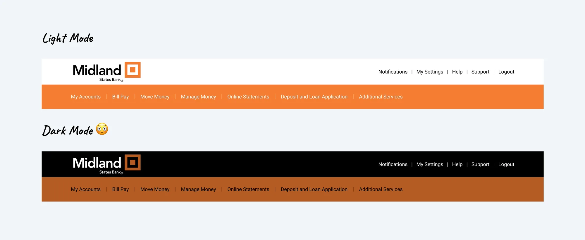
Accessibility
And finally, an accessibility issue was identified: the primary brand colors did not meet accessibility standards when paired with white text, which was widely used throughout the product.
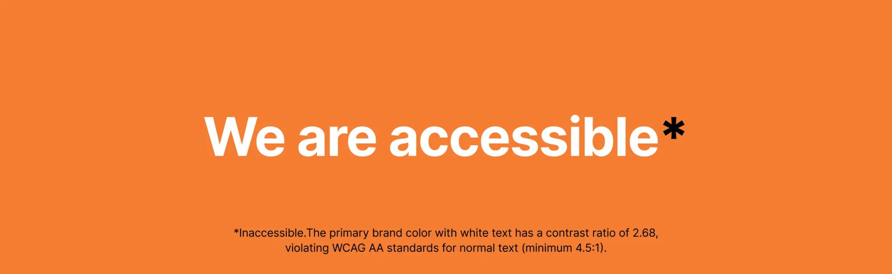
Problem outline
Chaos in the color variables
There was no logic or structure, and over time, multiple developers had contributed to the codebase, leading to a total breakdown in the color naming conventions.
Poor dark mode support
The existing implementation was a simple color inversion, which led to unintended and visually unappealing results.
Inaccessible brand colors
The primary brand colors did not meet accessibility standards when paired with white text, which was widely used throughout the product.
Solution
To create a more robust and functional color system, I began by introducing Static and Semantic color variables.
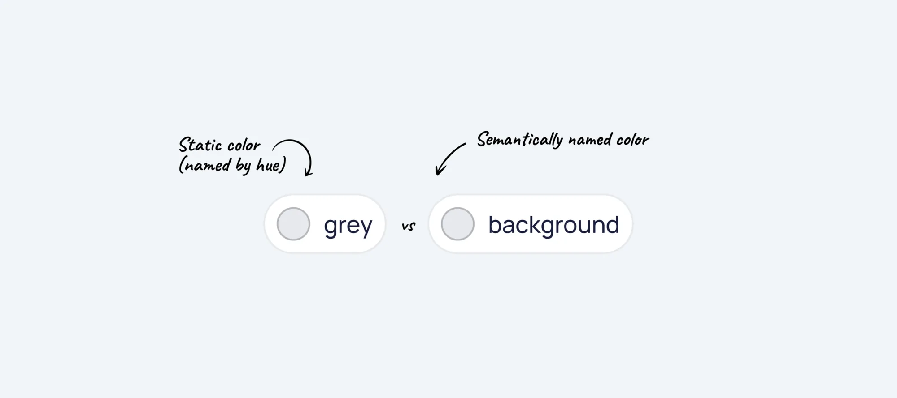
Static Colors
Static colors are the basic colors that form company’s brand. Designers rely on them everywhere: to build the UI, Illustrations, complex charts, banners and ads, and literally anything in MSB products.
These values are static and not themable. They have no meaning, and their names are representing their values (the hues). Green is green and red is red. It’s hard to misunderstood the value of these colors.
I expanded the color palette to include more static colors that support a wider range of use cases beyond basic branding. These new colors addressed essential needs such as interactive component states, including hover, pressed, and disabled states, as well as positive feedback messages, error indicators, and warnings.
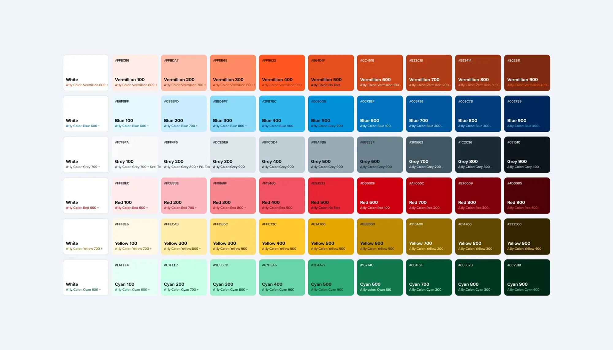
Semantic Colors
On top of that, I introduced semantic color variables. Semantic color variables are an additional layer between static colors and the UI. They are defined based on the role they play in the interface.
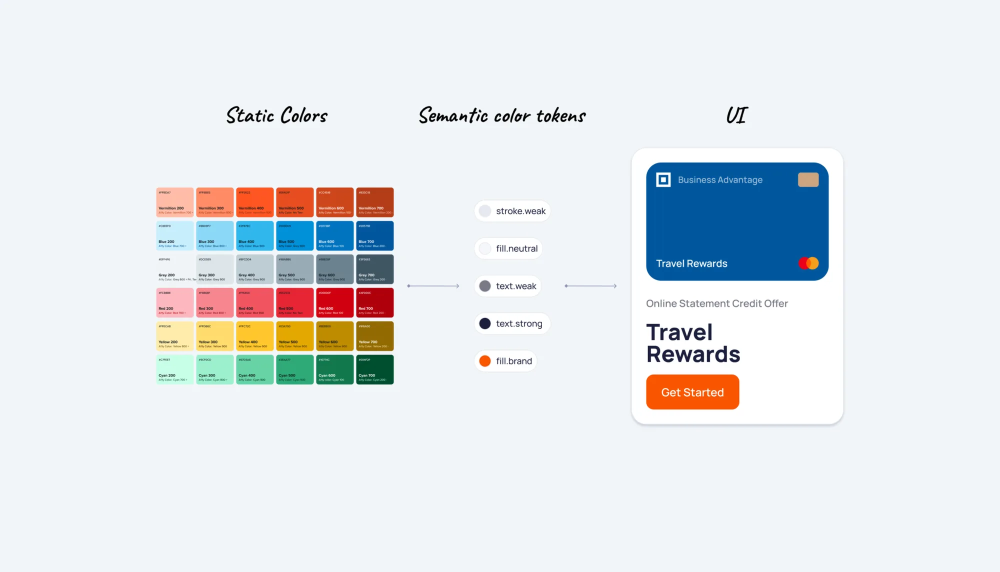
Naming convention
To help designers and engineers understand the logic behind semantic color tokens, I divided the token names into clear categories.
I used generic names for the color tokens, which means that color names don’t rely on our component inventory. So designers can build their custom components using the same color tokens, and they will still automatically support theming.
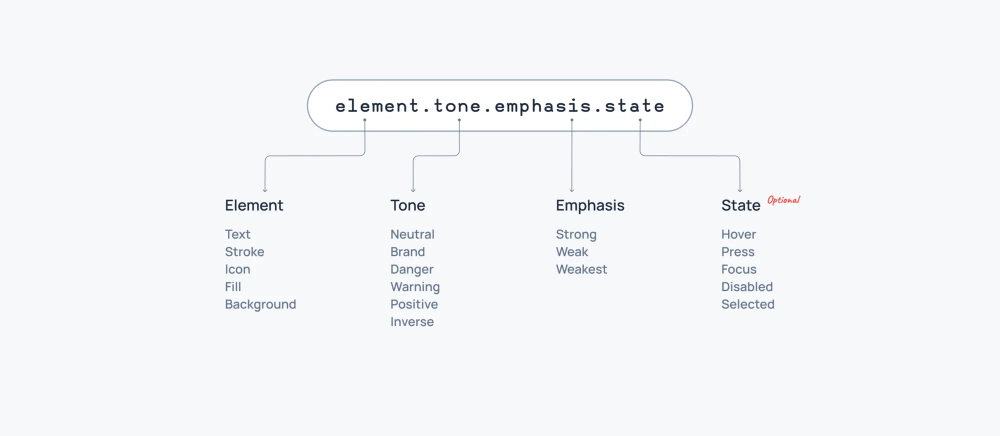
Examples
Here are a few examples of how these tokens can be applied to the UI.
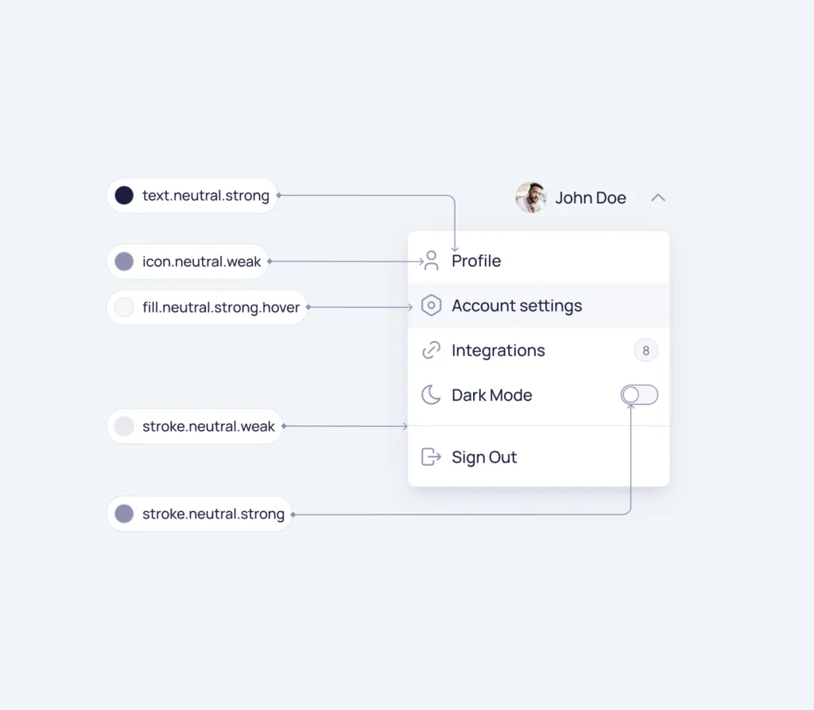
Testing the Color System
To ensure the new semantic color system was intuitive, I ran a fun testing exercise called Guess the Color. Designers and engineers reviewed UI elements and identified their semantic colors, helping us assess how well the system communicated its purpose.
With an 85% success rate, the exercise validated the system’s clarity and aligned the team on its usage.
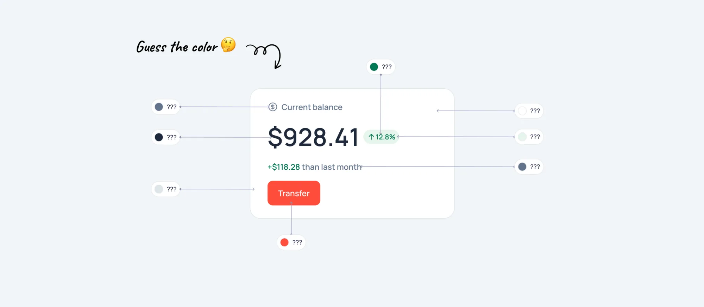
Dark Mode
I implemented separate light and dark mode color palettes to enhance user experience and accessibility. For dark mode, I intentionally desaturated the colors by default to prioritize improved readability in low-light environments.
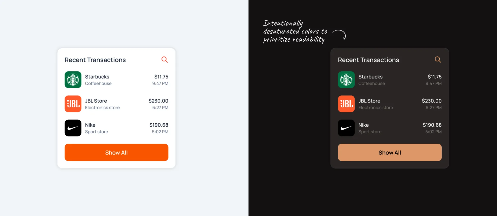
Data Visualisation Colors
In addition to semantic color tokens, I included a specific set of tokens designed for data representation, such as charts, graphs, and other forms of data visualization. These tokens are essentially a collection of miscellaneous colors. They serve as a palette of distinct colors without any underlying logical meaning tied to context or function.
These tokens are themable, allowing them to adapt to different design requirements or themes, but their primary purpose is to provide visual differentiation in data presentation, ensuring clarity and accessibility in visualizations.
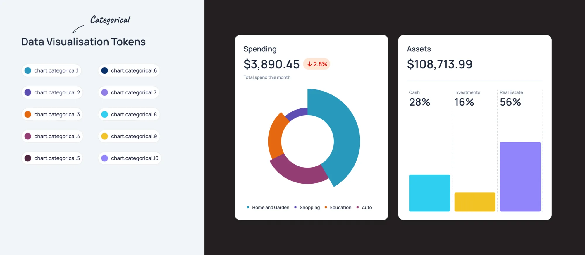
Documentation
Establishing a logical system with semantic colors is important, but equally critical is creating thorough documentation with clear examples to ensure proper understanding and consistent application.
I created comprehensive documentation for the design system using zeroheight, ensuring all details, including the semantic color system, are easily accessible to everyone internally.
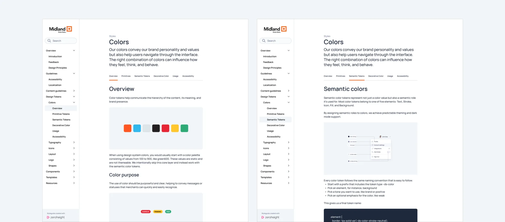
Results02
Key takeaways03
My work resulted in significant improvements to the color system:
- Semantic color variables. I established semantic color variables for clear, consistent use across the products.
- Documentation. Provided comprehensive documentation to guide designers and engineers on how to apply these variables effectively.
- Theming and Dark Mode Support. Built a strong foundation to support dark mode and future theming.
- Accessibility. Enhanced the main brand color to ensure better accessibility and compliance with contrast standards.
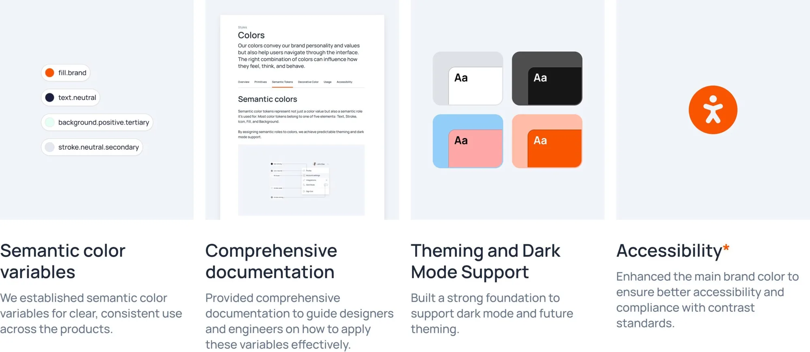
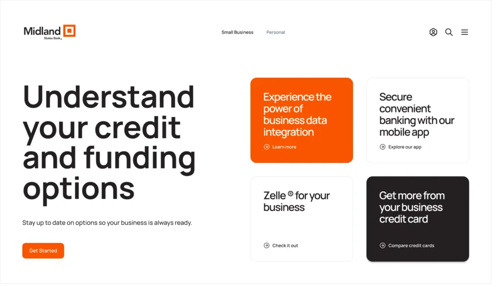
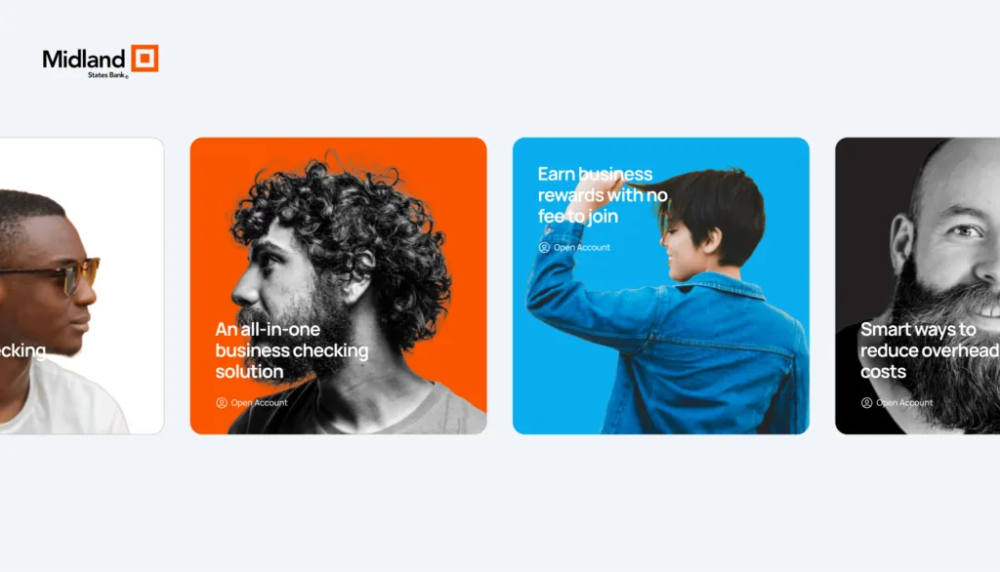
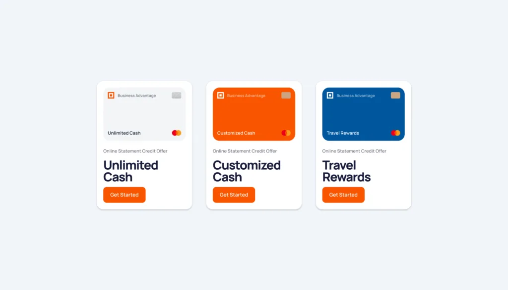
Thank you for scrolling all the way!